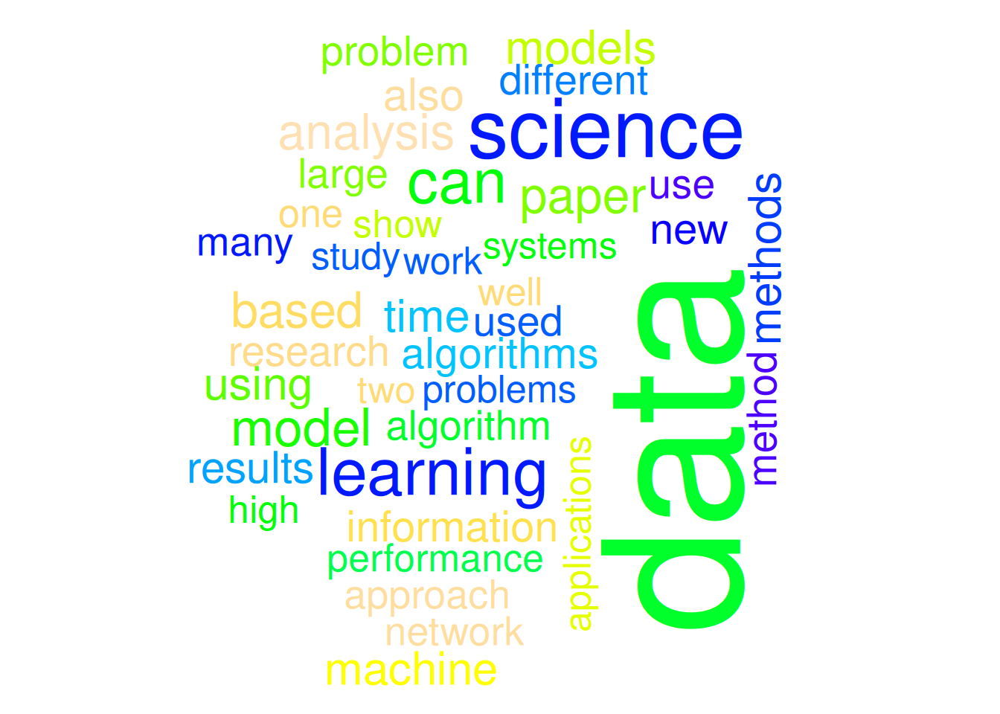
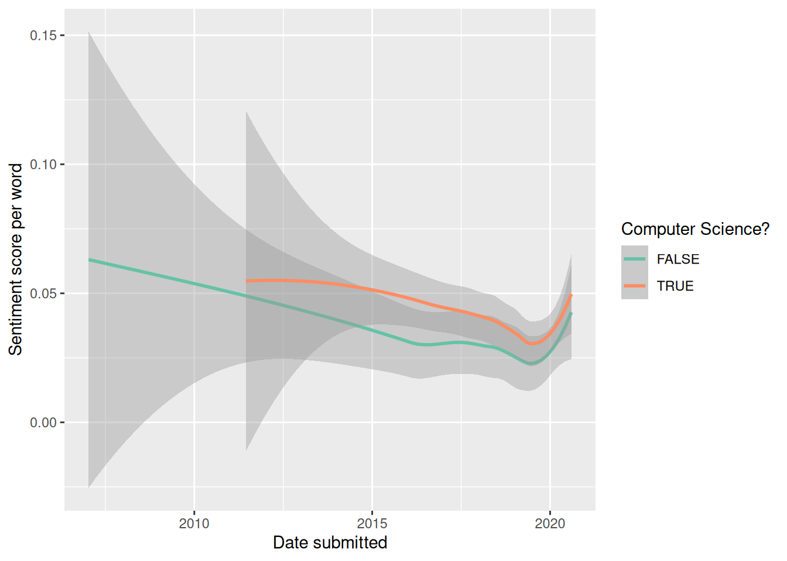

library(tidyverse)
library(scales)
library(tidytext)
library(textdata)
library(mdsr)
library(stopwords)
library(slam)
library(tm)text analysis project
NOTE: This demonstration has been adapted from the MDSR (3e) textbook.
resources
packages
data
We can import data using the aRxiv package. We won’t run it here since it strains the arXiv server.
library(aRxiv)
df <- arxiv_search(
query = 'ti:"Data Science"',
limit = 20000,
batchsize = 100
)
# glimpse(df)Instead, for this case study we will use some already-collected data from the mdsr package.
library(mdsr)
data(DataSciencePapers)
?DataSciencePapers
glimpse(DataSciencePapers)Rows: 1,089
Columns: 15
$ id <chr> "astro-ph/0701361v1", "0901.2805v1", "0901.3118v2", "…
$ submitted <chr> "2007-01-12 03:28:11", "2009-01-19 10:38:33", "2009-0…
$ updated <chr> "2007-01-12 03:28:11", "2009-01-19 10:38:33", "2009-0…
$ title <chr> "How to Make the Dream Come True: The Astronomers' Da…
$ abstract <chr> " Astronomy is one of the most data-intensive of the…
$ authors <chr> "Ray P Norris", "Heinz Andernach", "O. V. Verkhodanov…
$ affiliations <chr> "", "", "Special Astrophysical Observatory, Nizhnij A…
$ link_abstract <chr> "http://arxiv.org/abs/astro-ph/0701361v1", "http://ar…
$ link_pdf <chr> "http://arxiv.org/pdf/astro-ph/0701361v1", "http://ar…
$ link_doi <chr> "", "http://dx.doi.org/10.2481/dsj.8.41", "http://dx.…
$ comment <chr> "Submitted to Data Science Journal Presented at CODAT…
$ journal_ref <chr> "", "", "", "", "EPJ Data Science, 1:9, 2012", "", "E…
$ doi <chr> "", "10.2481/dsj.8.41", "10.2481/dsj.8.34", "", "10.1…
$ primary_category <chr> "astro-ph", "astro-ph.IM", "astro-ph.IM", "astro-ph.I…
$ categories <chr> "astro-ph", "astro-ph.IM|astro-ph.CO", "astro-ph.IM|a…initial data exploration and cleaning
DataSciencePapers <- DataSciencePapers |>
mutate(
submitted = lubridate::ymd_hms(submitted),
updated = lubridate::ymd_hms(updated)
)
glimpse(DataSciencePapers)Rows: 1,089
Columns: 15
$ id <chr> "astro-ph/0701361v1", "0901.2805v1", "0901.3118v2", "…
$ submitted <dttm> 2007-01-12 03:28:11, 2009-01-19 10:38:33, 2009-01-20…
$ updated <dttm> 2007-01-12 03:28:11, 2009-01-19 10:38:33, 2009-01-24…
$ title <chr> "How to Make the Dream Come True: The Astronomers' Da…
$ abstract <chr> " Astronomy is one of the most data-intensive of the…
$ authors <chr> "Ray P Norris", "Heinz Andernach", "O. V. Verkhodanov…
$ affiliations <chr> "", "", "Special Astrophysical Observatory, Nizhnij A…
$ link_abstract <chr> "http://arxiv.org/abs/astro-ph/0701361v1", "http://ar…
$ link_pdf <chr> "http://arxiv.org/pdf/astro-ph/0701361v1", "http://ar…
$ link_doi <chr> "", "http://dx.doi.org/10.2481/dsj.8.41", "http://dx.…
$ comment <chr> "Submitted to Data Science Journal Presented at CODAT…
$ journal_ref <chr> "", "", "", "", "EPJ Data Science, 1:9, 2012", "", "E…
$ doi <chr> "", "10.2481/dsj.8.41", "10.2481/dsj.8.34", "", "10.1…
$ primary_category <chr> "astro-ph", "astro-ph.IM", "astro-ph.IM", "astro-ph.I…
$ categories <chr> "astro-ph", "astro-ph.IM|astro-ph.CO", "astro-ph.IM|a…mosaic::tally(~ year(submitted), data = DataSciencePapers)year(submitted)
2007 2009 2011 2012 2013 2014 2015 2016 2017 2018 2019 2020
1 3 3 7 15 25 52 94 151 187 313 238 DataSciencePapers |>
filter(id == "1809.02408v2") |>
glimpse()Rows: 1
Columns: 15
$ id <chr> "1809.02408v2"
$ submitted <dttm> 2018-09-07 11:26:51
$ updated <dttm> 2019-03-05 04:38:35
$ title <chr> "A Primer on Causality in Data Science"
$ abstract <chr> " Many questions in Data Science are fundamentally c…
$ authors <chr> "Hachem Saddiki|Laura B. Balzer"
$ affiliations <chr> ""
$ link_abstract <chr> "http://arxiv.org/abs/1809.02408v2"
$ link_pdf <chr> "http://arxiv.org/pdf/1809.02408v2"
$ link_doi <chr> ""
$ comment <chr> "26 pages (with references); 4 figures"
$ journal_ref <chr> ""
$ doi <chr> ""
$ primary_category <chr> "stat.AP"
$ categories <chr> "stat.AP|stat.ME|stat.ML"DataSciencePapers |>
group_by(primary_category) |>
count()# A tibble: 99 × 2
# Groups: primary_category [99]
primary_category n
<chr> <int>
1 astro-ph 1
2 astro-ph.CO 3
3 astro-ph.EP 1
4 astro-ph.GA 7
5 astro-ph.IM 20
6 astro-ph.SR 6
7 cond-mat.dis-nn 1
8 cond-mat.mtrl-sci 7
9 cond-mat.quant-gas 1
10 cond-mat.str-el 3
# ℹ 89 more rowsDataSciencePapers <- DataSciencePapers |>
mutate(field = str_extract(primary_category, pattern = "^[a-z,-]+"))
mosaic::tally(x = ~field, margins = TRUE, data = DataSciencePapers) |>
sort()field
gr-qc hep-ph nucl-th hep-th econ quant-ph cond-mat q-fin
1 1 1 3 5 7 12 15
q-bio eess astro-ph physics math stat cs Total
16 29 38 62 103 150 646 1089 corpora and tokenization
DataSciencePapers |>
unnest_tokens(output = word, input = abstract, token = "words") |>
count(id, word, sort = TRUE)# A tibble: 120,509 × 3
id word n
<chr> <chr> <int>
1 2003.11213v1 the 31
2 1508.02387v1 the 30
3 1711.10558v1 the 30
4 1805.09320v2 the 30
5 2004.04813v2 the 27
6 2007.08242v1 the 27
7 1711.09726v3 the 26
8 1805.11012v1 the 26
9 1909.10578v1 the 26
10 1404.5971v2 the 25
# ℹ 120,499 more rowsarxiv_words <- DataSciencePapers |>
unnest_tokens(output = word, input = abstract, token = "words") |>
anti_join(tidytext::get_stopwords(), by = "word")
arxiv_words |>
count(id, word, sort = TRUE)# A tibble: 93,681 × 3
id word n
<chr> <chr> <int>
1 2007.03606v1 data 20
2 1708.04664v1 data 19
3 1606.06769v1 traffic 17
4 1705.03451v2 data 17
5 1601.06035v1 models 16
6 1807.09127v2 job 16
7 2003.10534v1 data 16
8 1611.09874v1 ii 15
9 1808.04849v1 data 15
10 1906.03418v1 data 15
# ℹ 93,671 more rowsarxiv_abstracts <- arxiv_words |>
group_by(id) |>
summarize(abstract_clean = paste(word, collapse = " "))
arxiv_papers <- DataSciencePapers |>
left_join(arxiv_abstracts, by = "id")wordcloud
library(wordcloud)
set.seed(4302026)
arxiv_papers |>
pull(abstract_clean) |>
wordcloud(
max.words = 40,
scale = c(8, 1),
colors = topo.colors(n = 30),
random.color = TRUE
)
sentiment analysis
We will use the AFINN lexicon, where each word is associated with an integer value ranging from -5 to 5, for our sentiment analysis purposes. When prompted, make sure to download the lexicon.
afinn <- tidytext::get_sentiments("afinn")
head(afinn)# A tibble: 6 × 2
word value
<chr> <dbl>
1 abandon -2
2 abandoned -2
3 abandons -2
4 abducted -2
5 abduction -2
6 abductions -2We can join this lexicon with our data to calculate a sentiment score.
arxiv_words |>
inner_join(afinn, by = "word") |>
select(word, id, value)# A tibble: 7,397 × 3
word id value
<chr> <chr> <dbl>
1 ambitious astro-ph/0701361v1 2
2 powerful astro-ph/0701361v1 2
3 impotent astro-ph/0701361v1 -2
4 like astro-ph/0701361v1 2
5 agree astro-ph/0701361v1 1
6 better 0901.2805v1 2
7 better 0901.2805v1 2
8 better 0901.2805v1 2
9 improve 0901.2805v1 2
10 support 0901.3118v2 2
# ℹ 7,387 more rowsarxiv_sentiments <- arxiv_words |>
left_join(afinn, by = "word") |>
group_by(id) |>
summarize(num_words = n(),
sentiment = sum(value, na.rm = TRUE),
.groups = "drop") |>
mutate(sentiment_per_word = sentiment / num_words) |>
arrange(desc(sentiment))
arxiv_papers <- arxiv_papers |>
left_join(arxiv_sentiments, by = "id")
arxiv_papers |>
skim(sentiment, sentiment_per_word)Variable type: numeric
| var | n | na | mean | sd | p0 | p25 | p50 | p75 | p100 |
|---|---|---|---|---|---|---|---|---|---|
| sentiment | 1089 | 0 | 4.02 | 7.00 | -26.00 | 0 | 4.00 | 8.00 | 39.00 |
| sentiment_per_word | 1089 | 0 | 0.04 | 0.06 | -0.23 | 0 | 0.03 | 0.07 | 0.33 |
The average sentiment score of these papers is 4, but they range from -26 to 39. Since abstracts with more words might accrue a higher sentiment score, we control for abstract length by dividing by the number of words. The paper with the highest sentiment score per word had a score of 0.333. Let’s take a closer look at the most positive abstract.
most_positive <- arxiv_papers |>
filter(sentiment_per_word == max(sentiment_per_word)) |>
pull(abstract)
strwrap(most_positive)[1] "Data science is creating very exciting trends as well as significant"
[2] "controversy. A critical matter for the healthy development of data"
[3] "science in its early stages is to deeply understand the nature of data"
[4] "and data science, and to discuss the various pitfalls. These important"
[5] "issues motivate the discussions in this article." Let’s explore if there are time trends or differences between different disciplines.
ggplot(data = arxiv_papers,
aes(x = submitted, y = sentiment_per_word,
color = field == "cs")) +
geom_smooth(se = TRUE) +
scale_color_brewer("Computer Science?", palette = "Set2") +
labs(x = "Date submitted", y = "Sentiment score per word")
bigrams
arxiv_bigrams <- arxiv_papers |>
unnest_tokens(
output = arxiv_bigram,
input = abstract_clean,
token = "ngrams",
n = 2
) |>
dplyr::select(arxiv_bigram, id)
arxiv_bigrams# A tibble: 121,642 × 2
arxiv_bigram id
<chr> <chr>
1 astronomy one astro-ph/0701361v1
2 one data astro-ph/0701361v1
3 data intensive astro-ph/0701361v1
4 intensive sciences astro-ph/0701361v1
5 sciences data astro-ph/0701361v1
6 data technology astro-ph/0701361v1
7 technology accelerating astro-ph/0701361v1
8 accelerating quality astro-ph/0701361v1
9 quality effectiveness astro-ph/0701361v1
10 effectiveness research astro-ph/0701361v1
# ℹ 121,632 more rowsarxiv_bigrams |>
count(arxiv_bigram, sort = TRUE)# A tibble: 96,854 × 2
arxiv_bigram n
<chr> <int>
1 data science 953
2 machine learning 403
3 big data 139
4 state art 121
5 data analysis 111
6 deep learning 108
7 e g 105
8 neural networks 100
9 real world 97
10 large scale 83
# ℹ 96,844 more rowstf-idf and document term matrices
arxiv_words |>
count(word) |>
arrange(desc(n)) |>
head()# A tibble: 6 × 2
word n
<chr> <int>
1 data 3222
2 science 1122
3 learning 804
4 can 731
5 model 540
6 analysis 488tidy_DTM <- arxiv_words |>
count(id, word) |>
tidytext::bind_tf_idf(word, id, n)
tidy_DTM# A tibble: 93,681 × 6
id word n tf idf tf_idf
<chr> <chr> <int> <dbl> <dbl> <dbl>
1 0901.2805v1 1989 1 0.00862 6.30 0.0543
2 0901.2805v1 2001 1 0.00862 5.61 0.0483
3 0901.2805v1 2600 2 0.0172 6.99 0.121
4 0901.2805v1 41 1 0.00862 6.30 0.0543
5 0901.2805v1 740 1 0.00862 6.99 0.0603
6 0901.2805v1 accessibility 1 0.00862 5.38 0.0464
7 0901.2805v1 amounts 1 0.00862 3.59 0.0310
8 0901.2805v1 analysis 1 0.00862 1.21 0.0104
9 0901.2805v1 archival 1 0.00862 6.30 0.0543
10 0901.2805v1 articles 3 0.0259 4.10 0.106
# ℹ 93,671 more rowstidy_DTM |>
arrange(desc(tf)) |>
head()# A tibble: 6 × 6
id word n tf idf tf_idf
<chr> <chr> <int> <dbl> <dbl> <dbl>
1 2007.03606v1 data 20 0.169 0.128 0.0217
2 1707.07029v1 concept 1 0.167 3.30 0.551
3 1707.07029v1 data 1 0.167 0.128 0.0214
4 1707.07029v1 implications 1 0.167 3.77 0.629
5 1707.07029v1 reflections 1 0.167 6.30 1.05
6 1707.07029v1 science 1 0.167 0.408 0.0680tidy_DTM |>
arrange(desc(idf), desc(n)) |>
head()# A tibble: 6 × 6
id word n tf idf tf_idf
<chr> <chr> <int> <dbl> <dbl> <dbl>
1 1507.00333v3 mf 14 0.107 6.99 0.747
2 1611.09874v1 fe 13 0.0549 6.99 0.384
3 1611.09874v1 mg 11 0.0464 6.99 0.325
4 2003.00646v1 wildfire 10 0.0515 6.99 0.360
5 1710.06905v1 homeless 9 0.0559 6.99 0.391
6 1901.00630v1 rpca 9 0.0549 6.99 0.384tidy_DTM |>
filter(word == "wildfire")# A tibble: 1 × 6
id word n tf idf tf_idf
<chr> <chr> <int> <dbl> <dbl> <dbl>
1 2003.00646v1 wildfire 10 0.0515 6.99 0.360arxiv_papers |>
pull(abstract) |>
str_subset("wildfire") |>
strwrap() |>
head()[1] "Artificial intelligence has been applied in wildfire science and"
[2] "management since the 1990s, with early applications including neural"
[3] "networks and expert systems. Since then the field has rapidly"
[4] "progressed congruently with the wide adoption of machine learning (ML)"
[5] "in the environmental sciences. Here, we present a scoping review of ML"
[6] "in wildfire science and management. Our objective is to improve" tidy_DTM |>
filter(word == "implications")# A tibble: 25 × 6
id word n tf idf tf_idf
<chr> <chr> <int> <dbl> <dbl> <dbl>
1 1310.4461v2 implications 1 0.00840 3.77 0.0317
2 1410.6646v1 implications 1 0.00719 3.77 0.0272
3 1511.07643v1 implications 1 0.00621 3.77 0.0234
4 1601.04890v2 implications 1 0.00680 3.77 0.0257
5 1608.05127v1 implications 1 0.00595 3.77 0.0225
6 1706.03102v1 implications 1 0.00862 3.77 0.0325
7 1707.07029v1 implications 1 0.167 3.77 0.629
8 1711.04712v1 implications 1 0.00901 3.77 0.0340
9 1803.05991v1 implications 1 0.00595 3.77 0.0225
10 1804.10846v6 implications 1 0.00909 3.77 0.0343
# ℹ 15 more rowstidy_DTM |>
filter(id == "1809.02408v2") |>
arrange(desc(tf_idf)) |>
head()# A tibble: 6 × 6
id word n tf idf tf_idf
<chr> <chr> <int> <dbl> <dbl> <dbl>
1 1809.02408v2 causal 10 0.0775 4.10 0.318
2 1809.02408v2 exposure 2 0.0155 5.38 0.0835
3 1809.02408v2 question 3 0.0233 3.23 0.0752
4 1809.02408v2 roadmap 2 0.0155 4.80 0.0744
5 1809.02408v2 parametric 2 0.0155 4.16 0.0645
6 1809.02408v2 effect 2 0.0155 3.95 0.0612tm_DTM <- arxiv_words |>
count(id, word) |>
tidytext::cast_dtm(document = id, term = word, value = n)
tm_DTM<<DocumentTermMatrix (documents: 1089, terms: 12294)>>
Non-/sparse entries: 93681/13294485
Sparsity : 99%
Maximal term length: 33
Weighting : term frequency (tf)